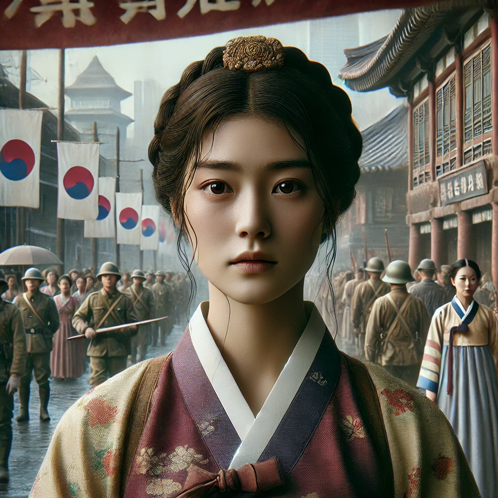

작은 땅의 야수들
목차
작가
김 주혜
출판일
2022
감상평에 대한 AI그림
일제시대를 옥희라는 주인공의 일생을 통해 보여준다고 느꼈다. 옥희가 성장하며 단단해지고, 마지막에는 지난 삶을 뒤돌아 보면서 긴 세월 끝에 평온을 찾는모습이, 그 시절 사람들의 힘듦과 또 반대로 내면의 강인한 모습을 보여주는 거 같아 인상 깊다.

감상평에 대한 AI평가
~~~~AI평가~~~~~
이 책에서는 옥희라는 인물을 통해 역사적 배경과 인간 내면의 강인함을 섬세하게 바라본 점이 돋보여요. "지난 삶을 뒤돌아보면서 평온을 찾는 모습"이라는 표현이 특히 여운을 남겨요. 책을 읽으며 느낀 감정을 구체적으로 잘 담아냈고, 단순한 줄거리 요약이 아니라 자신의 감상을 중심으로 풀어낸 점이 좋습니다.